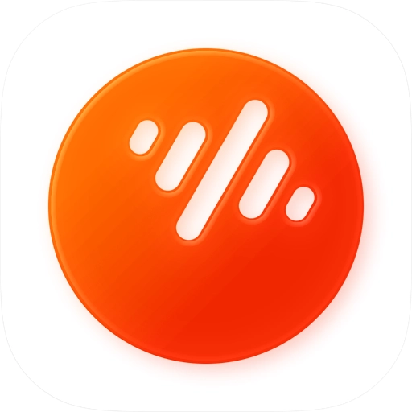

媒体信息同步
实时同步歌曲名、艺术家、专辑、封面、播放进度，延迟低于 200ms。
DBTOOL 把任意第三方音乐 App 接入车载信息娱乐系统的媒体中心。
中控、仪表、HUD 完整显示，方向盘按键即开即用。
核心能力
无需改造第三方 App，无需后台常驻。DBTOOL 在系统通知层静默工作，让音乐继续在原 App 中播放。
实时同步歌曲名、艺术家、专辑、封面、播放进度，延迟低于 200ms。
播放、暂停、上一曲、下一曲、音量调节。三重方控路由保障按键稳定响应。
同时监听多个主流音乐 App，闭包捕获包名，自动切换展示。
中控大屏、仪表盘、HUD 抬头显示同步呈现，信息布局为车机场景重制。
采用 DUCK 模式工作，不打断第三方 App 正在播放的音乐。
通过标准通知监听接口主动转发媒体信息，对车机与手机都几乎无感。
性能指标
DBTOOL 基于系统标准的通知监听服务，零侵入式接入车载媒体管线。
50–60MB
内存占用
常驻运行时平均
<100ms
方控响应
按键到执行延迟
<200ms
信息同步
元数据到车机
兼容应用
基于标准 MediaSession 协议自动发现与适配，更多 App 通过通知监听自动覆盖。
 QQ 音乐
QQ 音乐 酷狗音乐
酷狗音乐 Spotify
Spotify Apple Music
Apple Music 汽水音乐
汽水音乐
番茄畅听兼容性
以下范围基于实车测试覆盖的常见场景，具体机型请以实际效果为准。
常见问题
不会。DBTOOL 以 DUCK 模式工作，第三方 App 继续在原进程播放，DBTOOL 只在车机媒体中心同步显示与方控路由。
任何使用标准 MediaSession 协议、且开启通知的 App 都会被自动识别。具体列表见上方"兼容应用"区域。
不需要。DBTOOL 仅依赖 Android 标准通知监听接口，普通车机系统即可使用。
空闲时 CPU 占用约 1–2%，使用系统级通知监听服务监听事件，不做轮询，对车机续航影响极小。